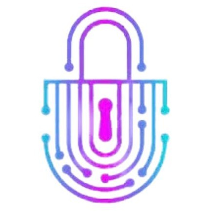
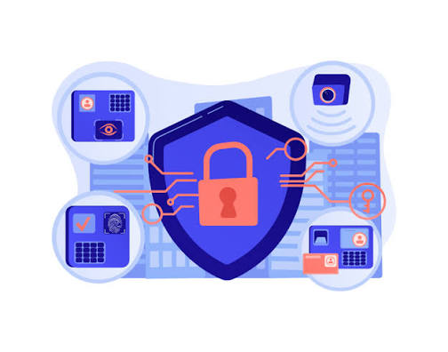

SecureInfo
Bienvenidos a SecureInfo, su plataforma de seguridad digital!
Bienvenidos a SecureInfo, su plataforma de seguridad digital!
Una empresa guatemalteca especializada en seguridad de la información que ayuda a organizaciones a proteger y gestionar mejor su información. Trabajamos en la identificación de riesgos, creación de políticas de seguridad, elaboración de procedimientos y capacitación del personal, ofreciendo soluciones prácticas y adaptadas a las necesidades de cada organización. Convertimos la seguridad de la información en reglas claras, buenas prácticas y una cultura de prevención.

Nace de la combinación de dos conceptos fundamentales que representan la esencia de la empresa: SECURE, relacionado con seguridad y protección, e INFO, relacionado con información. La unión de ambos conceptos da origen a un nombre corto, moderno y fácil de recordar, que comunica de manera directa el propósito de la empresa: proteger la información y ayudar a las organizaciones a gestionarla de forma segura. El nombre fue elegido porque la información se ha convertido en uno de los recursos más importantes para cualquier organización.

Brindar servicios de consultoría en seguridad de la información que ayuden a las organizaciones a identificar riesgos, establecer políticas claras y mejorar la forma en que protegen y utilizan su información, ofreciendo servicio accesible, responsable y adaptado a las necesidades de cada cliente.
Convertirse en la empresa de consultoría reconocida en Guatemala por asesorar pequeñas y medianas empresas, así como a entidades públicas, en el desarrollo de una cultura de seguridad de la información, ofreciendo soluciones prácticas y confiables.